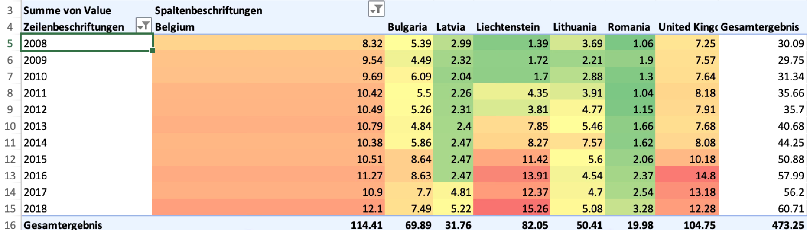
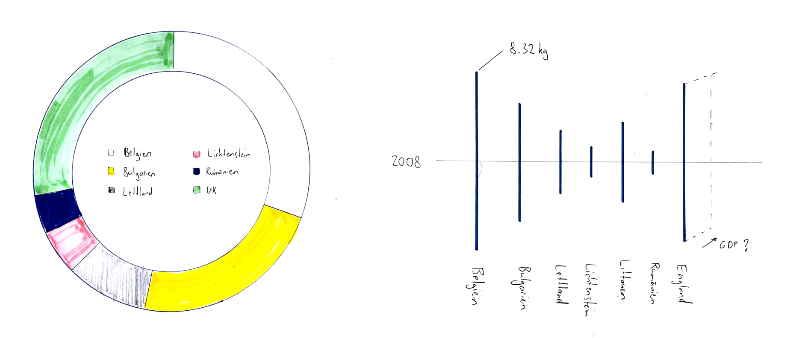

Prozess
Ich habe mich für meine Umsetzung von Leiterplatten inspirieren lassen. Diese 45° Winkel und das satte Grün erinnern sofort an elektronische Geräte. Es war spannend mal eine Website durchzudenken. Dabei habe ich gelernt wie wichtig es ist das Design zu testen, ob der Benutzer die interaktion versteht.
 